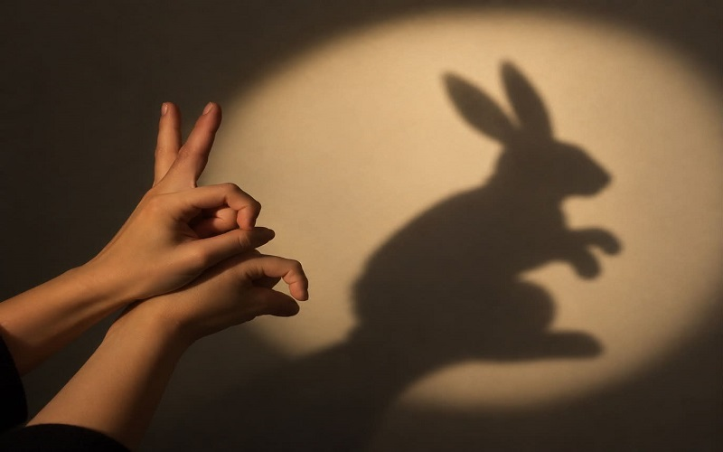

Тест № 16
Шоу на сенките

Направете си вкъщи
1) За да направите екран, вземете голям лист бяла хартия и нарисувайте с черен флумастер стволовете на дърветата в краищата на листа.
2) Нарисувайте палмови листа по върховете на клоните. Нарисувайте цветя и треви в основата на листа.
3) Направете различни фигурки на животни от картон. Например крокодил, маймуна, лъв и т.н. От едната страна на всяка фигурка залепете по една сламка. Така ще направите кукли за театъра на сенките.
4) В затъмнено помещение и стената (вместо екран) осветявайте с фенерче фигурите и ще направите театър на сенките.
Театър на сенките

ЮНЕСКО се ангажира да опази това древно изкуство в една от страните, където традиционно се е представяло по кафенетата.
Спорни са данните за това коя е родината на Театъра на сенките. Смята се, че е Китай.
Там кукленият театър съществува от 1000 г. пр. Хр.
Предполага се, че китайските традиции са основата, върху която е създаден уаянг – кукленият театър на сенките, разпространен в Индонезия.